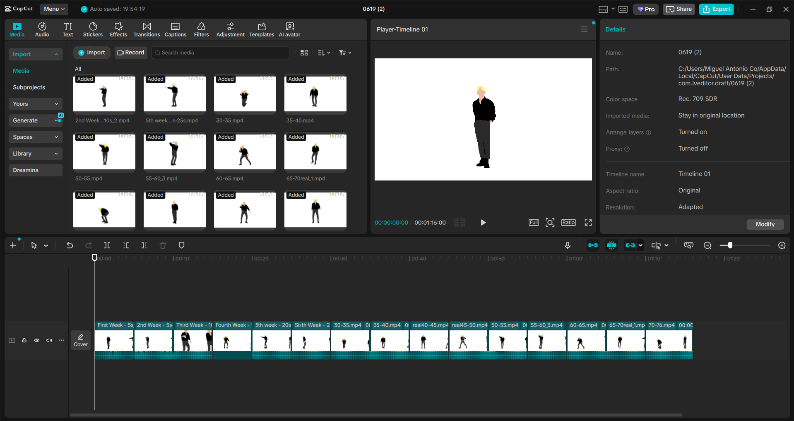
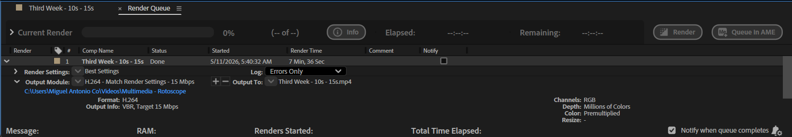

Choose high-quality video with clear subject-background contrast and interesting movement patterns.

Use CapCut to split the selected video into 5-second segments for easier editing.

In After Effects, create a separate 5-second composition for each clip segment.

Isolate the subject into separate layers (shirt, pants, body, hair, shoes) using the Roto Brush Tool. Freeze each layer to edit others independently.

Apply solid color fills to each isolated layer (shirt, pants, hair, etc.) to prepare for stylization.

Export each 5-second composition through the Render Queue with consistent settings.

Combine all clips in CapCut, add audio, and export in mp4 format.

Use Adobe Premiere Pro to add lyrics, sync them with the audio, and change background colors to enhance visual appeal.